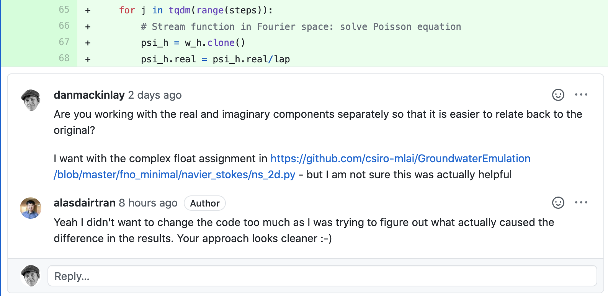
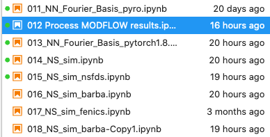

Present
- Dan MacKinlay
- Dan Pagendam
- Tao Cui
- Petra
Since last time
ICASSP happened
Main result of interest: model driven filtering [Revach et al. (2021);ShlezingerModelBased2020].
Software engineeering
Much software engineering has been happening
This is needed so that
- code is cleaner (nice)
- code can be parallelized on our HPC (needed eventually)
- input data can be generalized (needed right now)
This work is conducted in collaboration with Alasdair Tran at ANU CECs.

Currently we are investigating some alternative solvers to see which is least annoying.

Project upscaling meeting
If we had other workers on the project and we broadened the scope, could we put them to work?
In Dan’s opinion, yes. We could easily spend more hours on the most time-consuming parts of the project In (Dan’s) estimated priority order of needed skills would
- HPC implementation
- PDE analysis
- Neural uncertainty quantification
Alternatively, can we access labour from other sources? Several people have expressed degrees of interest in the project. (Mahmood Aktar at IM&T, Xuhui Fan at MLAIFSP Context(?), Alasdair Tran at ANU CECS).
Discussions
Next steps
application paper Some journals to consider, in order:
Start writing (overleaf)
Follow up on
bowenallocation.move this document onto internal servers so we can discuss internal matters